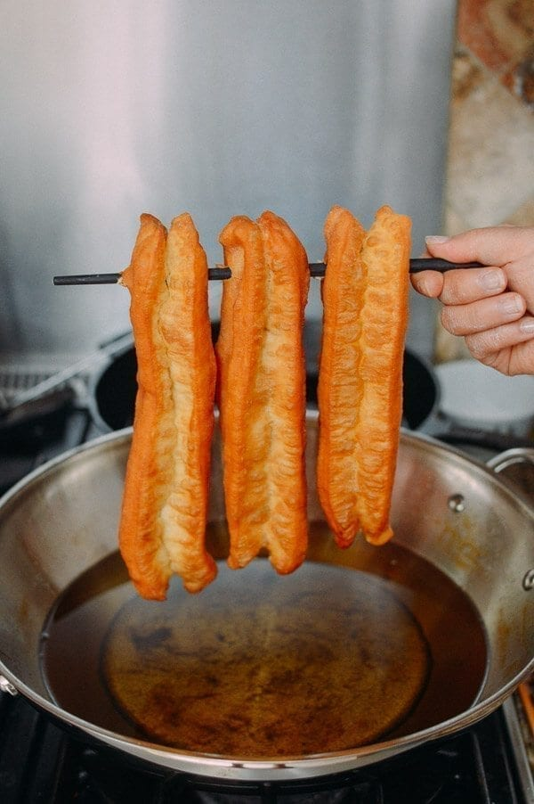

YOUTIAO RECIPE (CHINESE FRIED DOUGH)
Recipe

DESCRIPTION
Discover the authentic flavors of YouTiao, a beloved Chinese fried dough
delicacy. This traditional recipe guides you through the process of
creating irresistibly crispy and fluffy golden-brown strips that are
perfect for dipping or enjoying on their own.
INGREDIENTS
Dry ingredients:
-
200 gr bread flour about 1 1/2 cups, plus more for dusting. Can be
substituted with all-purpose flour
- ⅓ tsp baking soda
- ½ tsp salt
Wet ingredients:
- 1 large egg about 50-55 gr
- 25 gr milk about 1 1/2 Tbsp
- 75 gr water about 5 Tbsp
- 7 gr oil about 1/2 Tbsp
DIRECTIONS
Prepare the dough (one day before):
-
Put all the dry ingredients in a mixing bowl. Combine all the wet
ingredients in another bowl and then gradually add into the dry
ingredients and stir until roughly combined and then knead with your
hands or a mixer until smooth. The dough will somewhat a bit tacky and
soft, but it's okay, don't worry
-
Spray the dough with some water and then cover and rest for at least 4
hours or for as long as 8-10 hours (put in the fridge if you plan to do
longer than 4 hours)
Let the dough comes to room temperature:
-
you rest the dough in the fridge, 2 hours before you plan to make, get
the dough out from the fridge and let it set at the counter for about 2
hours to get it back to room temperature
Shape the dough:
-
Lightly flour your work surface with some flour. Dust your hands with
some flour too. The dough will be incredibly soft at this point as it
should be
-
Roll the dough out into about 1/2 cm in thickness and into a rectangle
shape. Use a dough cutter to cut the dough in half, and then each half
into 8 pieces (as shown in photos above). you will get 6 large pieces
and the ends will give you shorter piece (but hey..they are still tasty,
just shorter 🙂 )
-
Stack one strip of dough on top of the other. Use a knife or dough
cutter to make a line in the center. Be careful not to cut through the
dough. Repeat with the rest
Techniques you need to know to fry the dough:
-
Preheat about 2-3 inches of cooking oil over medium heat. Make sure
there is enough of oil or you tiao won't puff up nicely. Dip a chopstick
or a skewer into an oil, if it bubbles vigorously around it, the oil is
a bit too hot. Lower the heat to between medium and low, closer to low
and try again. There may be still a bit of bubbles, but shouldn't be too
much bubbles
-
Pick up one strip of dough using your thumbs and index fingers at both
ends and gently stretch the dough to the length that will fit into your
fryer and gently put the dough into the hot oil
-
Use a chopstick to gently roll the dough around as it is frying. Do not
use a chopstick to squeeze the dough or it won't puff. Just gently nudge
the dough to roll it around so it puffs up nicely
-
Watch the heat and fry the dough until it has nice golden brown. We
don't want the dough to get dark on the outside but still uncooked on
the inside. The heat should be at low-medium. Try to fry one at a time
if possible
-
Remove the youtiao to an absorbent paper towel and repeat with the rest
of the dough
Odin Recipes/ Home